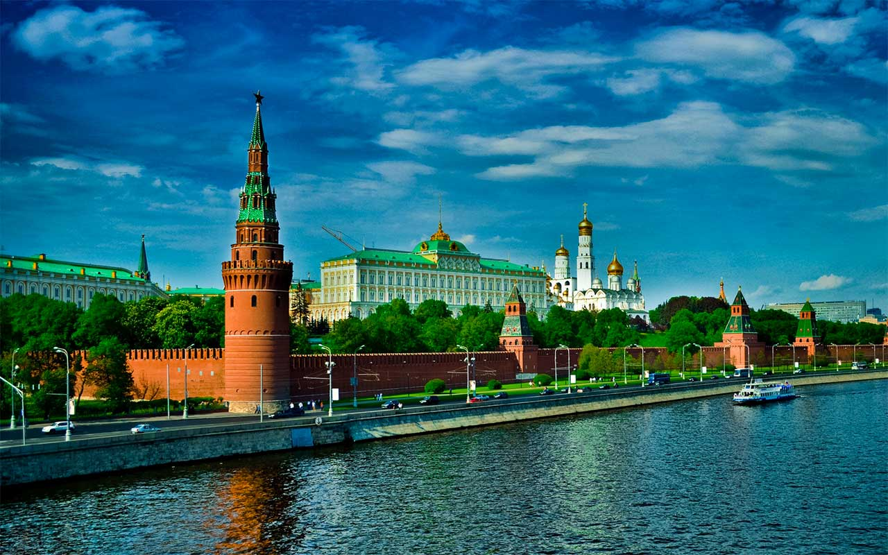

YFNY | презентация молодежных проектов
Единая информационно-регистрационная онлайн база наилучших программ в России, предназначенных для иностранных граждан и соотечественников, проживающих за рубежом.
#RussiaFirsthand
В современной России существует масса возможностей для молодежи. Многие государственные и частные организации занимаются реализацией интереснейших культурно-образовательных, добровольческих, деловых, научных, туристических и многих других проектов. Многих из этих проектов и мероприятий открыты для участия иностранцев, но по целому ряду причин -информация о них не доходит до зарубежной аудитории должным образом и в нужном масштабе. Тем временем за рубежом стремительно растет количество молодых людей, интересующихся Россией и желающих познать нашу страну собственными глазами. Эти люди очень часто сталкиваются с проблемой дефицита своевременной и качественно изложенной на их языке информации о доступных им возможностям в России. Задача Russia Firsthand заключается в том, чтобы помочь первым и вторым найти друг друга и удовлетворить их потребности и ожидания на максимально высоком уровне, так, чтобы обе стороны остались довольны. Предлагаемым решением является создание единого информационно-регистрационного онлайн ресурса, на котором будет не только аккумулироваться информация о программах, доступных для участия иностранцев и соотечественников, проживающих за рубежом, но и работать единая система регистрации и подачи заявок на эти мероприятия. Более того, Russia Firsthand также будет организовывать и ряд собственных программ, среди которых будет программа летних стажировок, а также программа краткосрочных культурно-деловых экскурсий в разных частях страны.
- Сформирована команда - Разработана концепция проекта - Начата работа над онлайн порталом, который будет доступен по ссылке: www.RussiaFirsthand.org - Составлен первоочередной список программ, информация и регистрация по которым откроется на портале не позже февраля 2017 года - Набирается список партнеров из ряда российских некоммерческих организаций и государственных учреждений, чьи программы могут быть представлены на портале а также с помощью которых могут быть созданы новые программы.
- подготовка презентационных и раздаточных материалов для распространения в американских вузах, а также на различных площадках, где могут присутствовать потенциальные участники организуемых и продвигаемых нами программ. - налаживание прямых контактов с директорами и профессорами факультетов русского языка, международных отношений, политологии и других направлений, в которых Россия является одним из ключевых элементов для изучения и среди студентов которых может быть интерес к программам в России.
Со значительными проблемами не сталкиваемся. Как только проект будет запущен и онлайн портал готов, нужна будет помощь в привлечении людей на сайт и к распространению информации.
Ожидаю, что среди участников форума найдутся луди, которые захотят присоединиться к команде организаторов данного проекта, а также, возможно и те, кто захочет принять непосредственное участие в работе проекта.
Тел.: (206)792-9094Эл. почта: sdgladysh@gmail.com